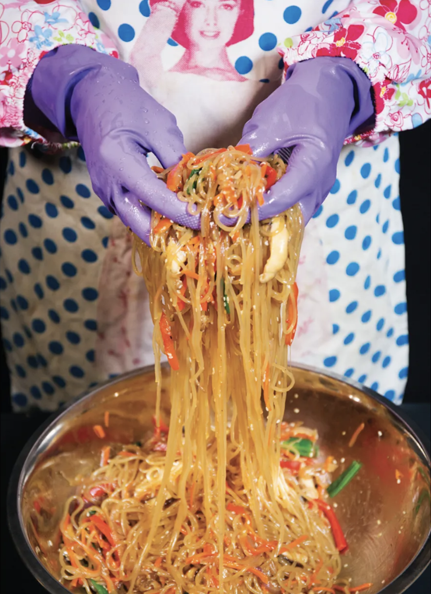

Jap Chae

Sturdy noodles, heavily seasoned, at room temperature, with enough stuff tossed in there to be almost pasta salad-y—I can't say the promise of jap chae comes through on paper. But the truth is in the eating. I like jap chae best as a side dish, with a big Korean spread; failing that, serve it with kimchi on the side.
Ingredients
- 10 cellophane or sweet potato noodles
- 2 T grapeseed oil
- 3 C thinly sliced red onions (1 large or 2 small)
- 3 C thinly sliced red bell peppers (2 peppers)
- + salt and black pepper
- 1 C julienned carrot (1 large)
- 4 C thinly sliced shiitake mushroom caps (about 8 oz)
- 1 bunch scallions, cut into 1" pieces (about 4 oz)
- 2 T minced garlic
- 1/2 C mirin
- 1/2 C soy sauce
- 2 t sugar
- 1 1/2 t sesame oil
- 3 T toasted sesame seeds
Steps
- Set up a large bowl of ice and water. Bring a large pot of water to a boil. Cook the noodles according to package directions. Drain the noodles, shock in the ice water, and drain again. Using kitchen scissors, cut the noodles a couple of times to break up the long strands, then transfer to a large bowl.
- Heat the grapeseed oil in a large skillet over medium heat. Add the onion and bell peppers and cook until the vegetables have softened but still retain their crunch. Season with salt and black pepper. Add the carrots, shiitakes, scallions, and garlic and cook until th vegetables are a soft, lightly caramelized mass, about 10 minutes longer.
- Deglaze the pan with the mirin, using a spatula to scrape up any stuck-on bits from the bottom of the pan.
- Add the vegetables to the bowl of noodles, Stir in the soy sauce, sugar, sesame oil, and sesame seeds and toss to combine. Season to taste with salt and pepper. Serve at room temperature on a large platter.
Makes 8 servings